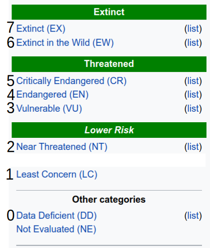

Homework 5 - Investigating Mammalian Fecundity and Conservation#
Logistics#
Due date: The homework is due 11:59pm on Tuesday, February 11.
You will submit your work on MarkUs. To submit your work:
Download this file (
Homework_5.ipynb) from JupyterHub. (See our JupyterHub Guide for detailed instructions.)Submit this file to MarkUs under the hw5 assignment. (See our MarkUs Guide for detailed instructions.) All homeworks will take place in a Jupyter notebook (like this one). When you are done, you will download this notebook and submit it to MarkUs. We’ve incuded submission instructions at the end of this notebook.
Introduction#
In this assignment, we will ask a question about how mammalian reproductive strategies relate to their conservation risk. We will combine information from two different datasets to investigate this question.
Data science question for the week:#
This week, we will be combining data on mammalian ecology to compute a metric that we will call “maximum lifetime fecundity”. This value estimates a species’ reproductive potential. That is, how prodigious is each species at producing new offspring?
As biologists, we may have an intuition that species that are more capable at reproducing quickly maybe more resilient to extinction as the environment changes. We will see how this metric relates to extinction risk, as calclated from IUCN data to ask a targeted question about mammalian conservation:
Is there a difference in extinction risk between species with higher reproductive potential (greater maximum lifetime fecundity) vs. species with lower reproductive potential smaller maximum lifetime fecundity)?
Problem 1. Calculate maximum lifetime fecundity across mammals#
Problem 1a. Read in Mammalian life history data#
Please open the file fecundity.csv and read all the lines into Python’s memory. Assign the header to the variable lh_header and the rest of the data to lh_data. You may wish to examine the header and first couple lines of the data file.
# Write your code here
Problem 1b. Calculate our lifetime fecundity metric#
We will now estimate a new measurement that we will call max_lifetime_fecundity. Use the following formula to calculate this metric:
This will be computed using the following columns:
maturity_d: How long it takes for the average individual to grow to sexual maturity. This is the earliest age at which an individual can reproduce. This is measured in days as the interval between birth and the time when the individual first reproduces.longevity_m: The maximum observed lifespan of an individual within each species, expressed in months.interbirth_d: How long adult females wait, on average, between giving birth and becoming pregnant again, expressed in days.litter_size_ind: How many babies females within each species have at one time, on average. The units are individuals, or number of offspring.
Instructions#
Create an empty dictionary and assign it to a variable called max_fecund.
Loop over the lines of data and split up the columns using a comma delimiter and apply the above formula to the data across each column. Keep in mind that you will need to mind missing data, which is expressed in this datafile as an empty string, "". Since you will not be able to calculate the metric unless all four measurements are present, use exception handling to skip over any line that is missing any one or more of these.
Once you calcuate the metric for each line, store the name of the species represented on that line as the key in max_fecund with the metric you calculate as the value.
A note on units (important!!!)#
The three measurements relating to time ('maturity_d', 'longevity_m', and 'interbirth_d') are expressed in two different units. As you loop over the lines and calculate this metric from the values in each column, convert each of these columns so that they are expressed in years.
# Write your code here
Problem 1c. Interpret#
Please explain what our maximum fecundity metric is measuring (2pts). In what units is it expressed (2pts)? Can you think of any reasons the metric might be inaccurate (optional)?
WRITE YOUR RESPONSE HERE.
Problem 2. IUCN Conservation Risk#
Next, we will read in the IUCN conservation risk data and use it to classify whether species are or are not at risk.
Problem 2a. Read in IUCN Data#
Read in the IUCN data. Assign the header (first line) to the variable iucn_header. Assign the rest of the data to iucn_data. You may wish to examine the header and first few lines to familiarize yourself with how the dataset is structured.
# Write your code here
Problem 2b. Define IUCN Risk Levels#
Next, we will want to order the IUCN risk levels according to their severity. We will use the following numbering scheme (defined in lecture):

First, run the code below to create a dictionary, assigned to the variable iucn_map, mapping each IUCN level with a numbered level, expressed as a python integer.
Next, create an empty dictionary and assign it to the variable at_risk. Loop over the lines of the file, splitting them using a comma (the delimiting character for this dataset). Next, we will want to know if the species for each row is at significant conservation risk. We will consider any species at IUCN level “VU” or above (numerically, level 3 or above) to be at risk. Look up the numeric expression of the IUCN level using iucn_map. Add the species name for each line to at_risk as the key. If the IUCN level is at or above 3, set the value as True. If it is below 3, set it to False.
As an example of how things should look, let’s consider humans, Homo sapiens. Homo sapiens are at IUCN level “LC”, or 1 in our numeric mapping scheme. Humans would be stored in at_risk as follows:
{"Homo_sapiens": False}
On the other hand, the bat species Acerodon jubatus is at level “EN”, or 4 in our numbered scheme, and so would be assigned the value True when added to the dictionary. Our dictionary with both species would appear as follows:
{"Homo_sapiens": False, "Acerodon_jubatus": True}
# Run this cell to define iucn_map
iucn_map = {'LC': 1,'NT': 2,'VU': 3,'EN': 4,'CR': 5,'EW': 6,'EX': 7,'DD': 0}
# Write your code here
Problem 3. Put everything together#
Here, we will want to calculate whether species that are at risk tend to have more or fewer offspring throughout their lifespan. To do this, we can calculate the mean maximum lifetime fecundity separately for species that are and are not at risk. First, copy the calc_mean() function that you defined in last week’s homework and paste it below.
# Write your code here
Problem 3a. Partition data according to threatened status#
In this problem, you will follow a similar procedure to last week’s homework, where you compared risk between democrat and republican-controlled states. Create two empty lists and assign them, respectively, to the variables threat_fecund and unthreat_fecund. Next, loop over max_fecund. Look up whether each species is threatened by checking at_risk. If it is, append its maximum lifetime fecundity stored as the value in max_fecund to threat_fecund, and if not, append it to unthreat_fecund.
HINT: one new hiccup this week is that some of the species in max_fecund do not have entries in at_risk. This is because they were not present in the original IUCN data. As a result, you will want to use exception handling to skip over any instances where looking up a species from max_fecund in at_risk fails.
# Write your code here
Problem 3b. Compare mean lifetime fecundity between threatened and unthreatened species#
Calculate the mean lifetime fecundity in each of the lists populated in the previous question. Assign each to mean_threat_fecund and mean_unthreat_fecund.
# Write your code here
print(mean_threat_fecund)
print(mean_unthreat_fecund)
Problem 3c. Interpret#
Do threatened species or non-threatened species tend to have more potential offspring over their lifespan (1 pt)?
Please speculate on why this might be the case (2pt).
WRITE YOUR RESPONSE HERE.